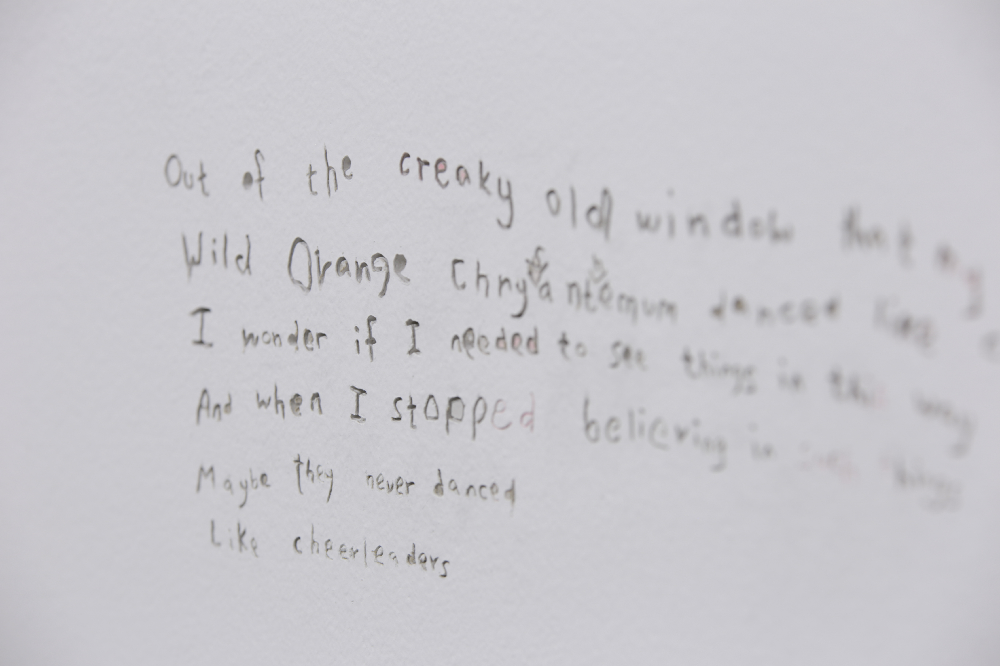
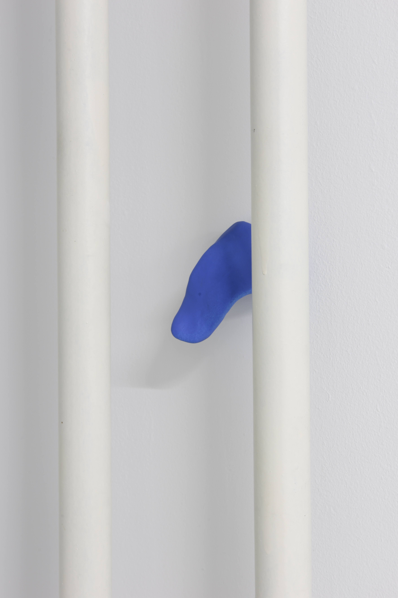
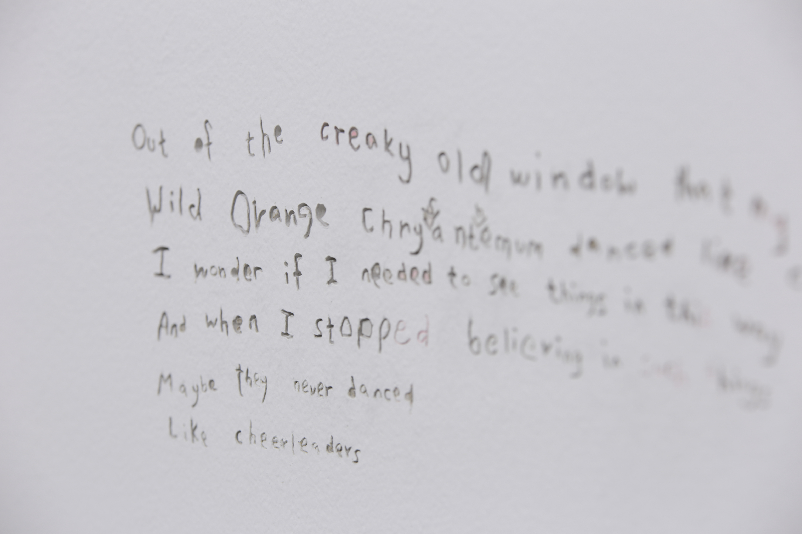
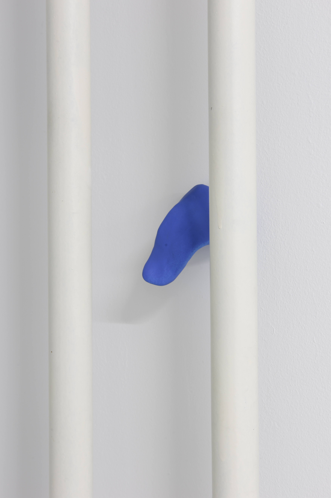

For the first show,
Slowdown For the Baby, Peilian Li exhibits
Out of the Creaky Window
That My Grandfather Never Repaired, a sculpture and text installation based on memory,
nostalgia, and childhood fairytales. César Axel intervenes with his speculative audio work,
Aspiring, which blends into the space but also adds another dimension. Together, both works
inhabit the perimeters of reality between reminiscence and imagination.

 


